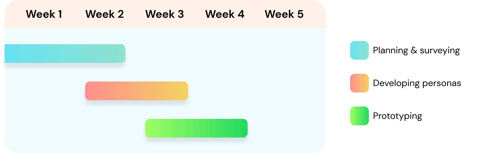
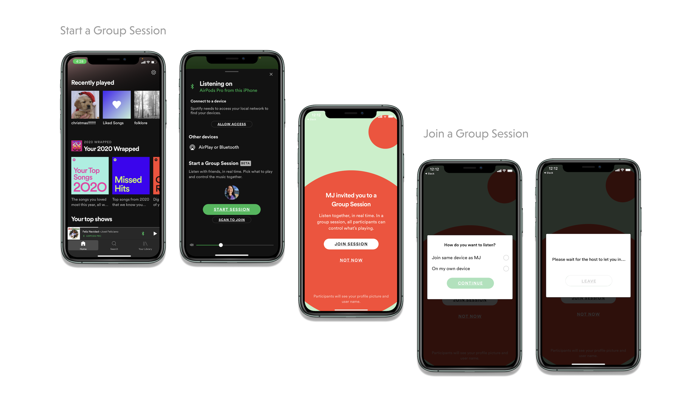

Overview
Spotify is a popular audio-streaming service that offers millions of songs from various artists.
It is available as a downloadable app for mobile and PC, as well as a web browser version.
This project aims to enhance the Spotify experience by redesigning and adding UI/UX features
to cater to the growing number of users and deliver an improved service.

Timeline
Throughout this project, our primary focus has been on
addressing the following question:
"How can we effectively engage listeners using Spotify's Group Session
features and accommodate their diverse range of activities?"

Customer Interviewing & Surveying
Within the research and surveying phase of our design process,
our group members encountered some personal pain points.
However, we crafted the survey in a neutral manner,
aiming to minimize bias and gain a clearer understanding of the audience's preferences and needs.
We initially expected:
1) Dissatisfaction with UI overall
2) Difficulty using queue function
3) Greater need for a “simple mode"
Based on our research findings, several key points emerged:
1) Users who utilized Spotify for study purposes expressed a desire for a cleaner homepage design.
2) A significant number of respondents indicated a strong preference for
increased social integration within the platform.
3) Many users expressed their interest in the ability to
collaborate with friends while enjoying music together.
With these pain points in mind, I devised a comprehensive user flow encompassing
both guest and host perspectives for the Group Session features.
Final Prototype
The final prototype simplified the group session page for hosts and guests, with an expanded "invite your friends" screen for easy access. Hosts can approve or reject guest invitations, and guests can wait in a "wait room" until it's time to join. We've also enhanced the queue feature, allowing direct song searches within the session.


Final Thoughts
In summary, our Spotify Group Session redesign project for ENGN0032 - Introduction to Engineering: Design
aimed to enhance the user experience by streamlining invites, improving host control, and
introducing a seamless queue feature. Through thorough research and collaboration,
I developed a polished prototype using Figma, providing valuable insights for future design projects.
The project was a great learning experience, allowing me to apply engineering and design principles to
create a more enjoyable and collaborative music-sharing platform.